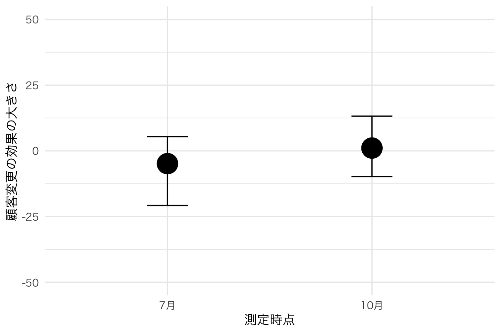
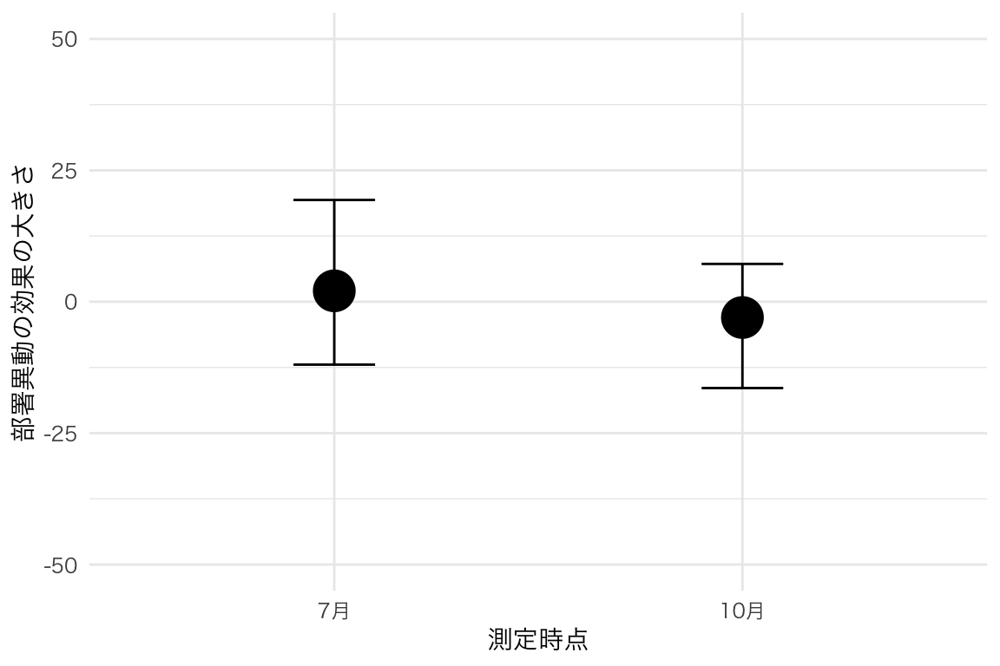
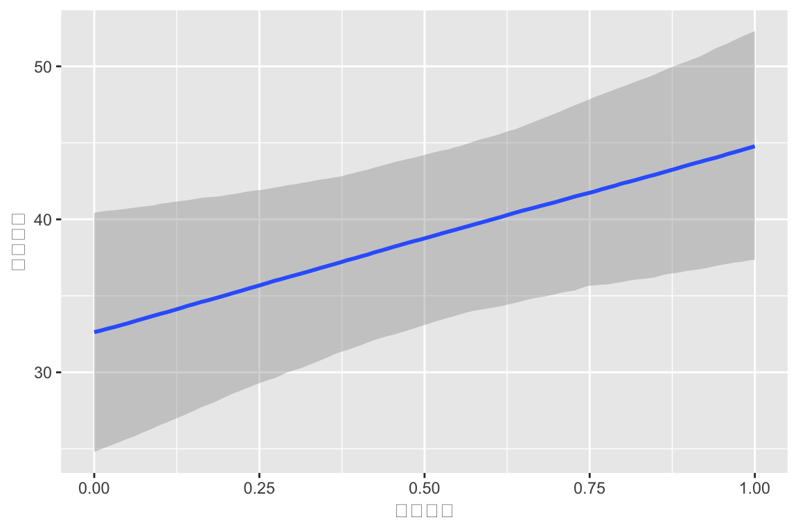
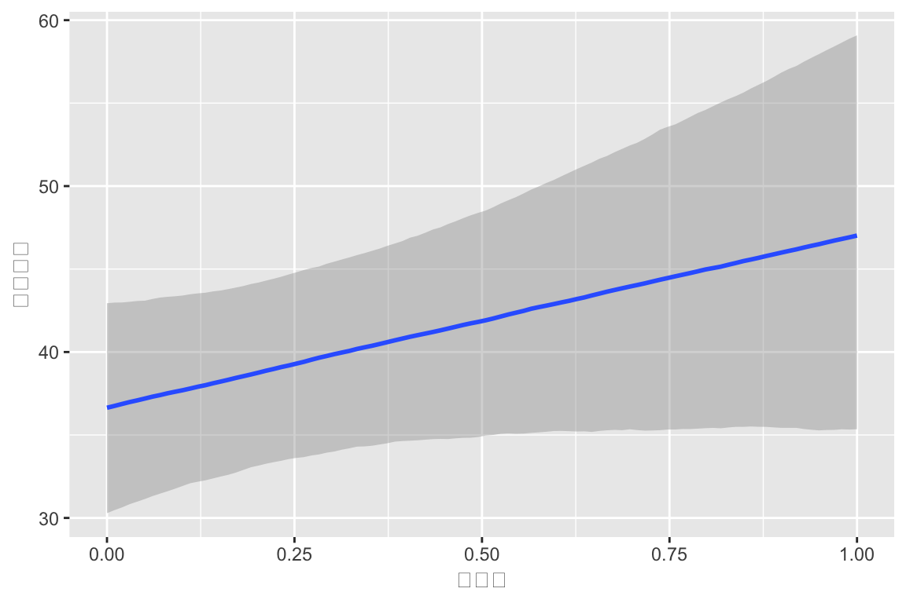
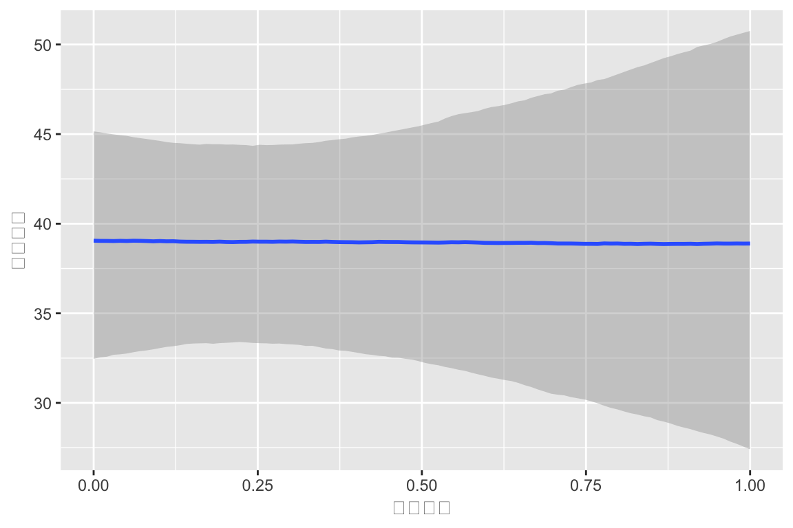
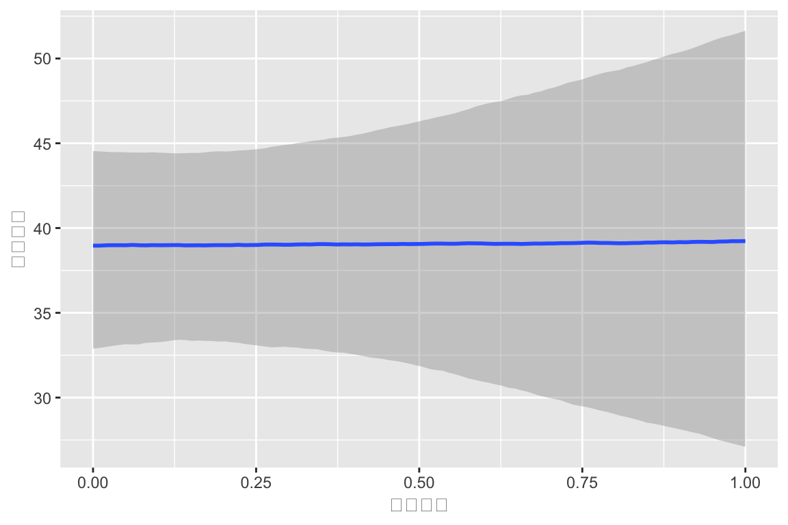

library(brms)
formula <- bf(スコア値 ~ 1 + 顧客変更 + 部署異動 + (昇降格 | 測定時点))
fit <- brm(formula, data = df_long, chains = 4, cores = 4, iter = 10000)ココシルデータ解析１-１
昇格の影響の特定
はじめに
従業員 28 名を対象に，７月と10月の２回，繰り返しココシルスコアが測定された．同時に本企業では４月と10月に異動と昇進があり，その有無も紐づけられている．しかし，初回の測定は昇進の辞令発令後３ヶ月であるのに対し，２回目の測定は辞令があった当月である． この違いを考慮したモデルを複数フィットしてみる．
基本的に説明変数は，顧客変更，部署異動，昇進の３つのみを考える．
1 測定時点ごとの変動係数モデル
２回の測定で，昇降格の影響が大きく違う可能性があることがわかった．
ランダム係数の間の標準偏差がすごく大きい：\(\sigma=17.04\)．
1.1 昇降格の影響だけ変動係数にした場合
summary(fit)Warning: There were 159 divergent transitions after warmup. Increasing
adapt_delta above 0.8 may help. See
http://mc-stan.org/misc/warnings.html#divergent-transitions-after-warmup Family: gaussian
Links: mu = identity; sigma = identity
Formula: スコア値 ~ 1 + 顧客変更 + 部署異動 + (昇降格 | 測定時点)
Data: df_long (Number of observations: 54)
Draws: 4 chains, each with iter = 10000; warmup = 5000; thin = 1;
total post-warmup draws = 20000
Multilevel Hyperparameters:
~測定時点 (Number of levels: 2)
Estimate Est.Error l-95% CI u-95% CI Rhat Bulk_ESS
sd(Intercept) 13.29 10.23 1.16 39.67 1.00 4451
sd(昇降格) 16.12 14.36 0.87 51.99 1.00 4633
cor(Intercept,昇降格) 0.11 0.56 -0.92 0.96 1.00 11854
Tail_ESS
sd(Intercept) 1947
sd(昇降格) 2260
cor(Intercept,昇降格) 9975
Regression Coefficients:
Estimate Est.Error l-95% CI u-95% CI Rhat Bulk_ESS Tail_ESS
Intercept 38.06 8.72 20.43 56.52 1.00 5539 5019
顧客変更 -2.49 6.32 -14.87 9.99 1.00 15678 11700
部署異動 -0.55 7.55 -15.43 14.24 1.00 11526 2682
Further Distributional Parameters:
Estimate Est.Error l-95% CI u-95% CI Rhat Bulk_ESS Tail_ESS
sigma 18.10 1.86 14.90 22.20 1.00 9374 2895
Draws were sampled using sampling(NUTS). For each parameter, Bulk_ESS
and Tail_ESS are effective sample size measures, and Rhat is the potential
scale reduction factor on split chains (at convergence, Rhat = 1).print(ranef(fit))$測定時点
, , Intercept
Estimate Est.Error Q2.5 Q97.5
0 -5.914550 8.731831 -24.97542 11.19211
1 4.947094 8.598296 -12.20286 24.22834
, , 昇降格
Estimate Est.Error Q2.5 Q97.5
0 -0.1636156 20.398576 -44.213229 42.29425
1 8.4911687 6.920103 -2.779656 22.857821.2 昇降格の変動係数のプロット
library(brms)
formula <- bf(スコア値 ~ (1 + 昇降格 | 測定時点))
fit <- brm(formula, data = df_long, chains = 4, cores = 4, iter = 10000)library(ggplot2)
ranef_昇降格 <- ranef(fit)$測定時点
posterior_means <- ranef_昇降格[,1,2]
lower_bounds <- ranef_昇降格[,3,2]
upper_bounds <- ranef_昇降格[,4,2]
plot_df_昇降格 <- data.frame(
term = rownames(ranef_昇降格),
mean = posterior_means,
lower = lower_bounds,
upper = upper_bounds
)
# termを因子型に変換（順序を保持するため）
plot_df_昇降格$term <- factor(plot_df_昇降格$term,
levels = c("0", "1"),
labels = c("7月", "10月"))
ggplot(plot_df_昇降格, aes(x = factor(term), y = mean)) +
geom_point(size = 8) + # 平均値のポイント
geom_errorbar(aes(ymin = lower, ymax = upper), width = 0.2) + # エラーバー
theme_minimal() +
labs(x = "測定時点", y = "昇格の効果の大きさ") +
theme(
# axis.title.x = element_text(size = 30), # x軸ラベルのサイズ
# axis.title.y = element_text(size = 30), # y軸ラベルのサイズ
# axis.text.x = element_text(size = 22), # x軸目盛りのサイズ
# axis.text.y = element_text(size = 22), # y軸目盛りのサイズ
text = element_text(family = "HiraginoSans-W3")
) +
coord_cartesian(ylim = c(-50, 50)) # y軸の範囲を調整
1.3 すごい！じゃあ顧客変更は？
library(brms)
formula <- bf(スコア値 ~ (1 + 顧客変更 | 測定時点))
fit <- brm(formula, data = df_long, chains = 4, cores = 4, iter = 10000)library(ggplot2)
ranef_顧客変更 <- ranef(fit)$測定時点
posterior_means <- ranef_顧客変更[,1,2]
lower_bounds <- ranef_顧客変更[,3,2]
upper_bounds <- ranef_顧客変更[,4,2]
plot_df_顧客変更 <- data.frame(
term = rownames(ranef_顧客変更),
mean = posterior_means,
lower = lower_bounds,
upper = upper_bounds
)
# termを因子型に変換（順序を保持するため）
plot_df_顧客変更$term <- factor(plot_df_顧客変更$term,
levels = c("0", "1"),
labels = c("7月", "10月"))
ggplot(plot_df_顧客変更, aes(x = factor(term), y = mean)) +
geom_point(size = 8) + # 平均値のポイント
geom_errorbar(aes(ymin = lower, ymax = upper), width = 0.2) + # エラーバー
theme_minimal() +
labs(x = "測定時点", y = "顧客変更の効果の大きさ") +
theme(
# axis.title.x = element_text(size = 30), # x軸ラベルのサイズ
# axis.title.y = element_text(size = 30), # y軸ラベルのサイズ
# axis.text.x = element_text(size = 22), # x軸目盛りのサイズ
# axis.text.y = element_text(size = 22), # y軸目盛りのサイズ
text = element_text(family = "HiraginoSans-W3")
) +
coord_cartesian(ylim = c(-50, 50)) # y軸の範囲を調整
1.4 すごい！続けて部署異動は？
library(brms)
formula <- bf(スコア値 ~ (1 + 部署異動 | 測定時点))
fit <- brm(formula, data = df_long, chains = 4, cores = 4, iter = 10000)library(ggplot2)
ranef_部署異動 <- ranef(fit)$測定時点
posterior_means <- ranef_部署異動[,1,2]
lower_bounds <- ranef_部署異動[,3,2]
upper_bounds <- ranef_部署異動[,4,2]
plot_df_部署異動 <- data.frame(
term = rownames(ranef_部署異動),
mean = posterior_means,
lower = lower_bounds,
upper = upper_bounds
)
# termを因子型に変換（順序を保持するため）
plot_df_部署異動$term <- factor(plot_df_部署異動$term,
levels = c("0", "1"),
labels = c("7月", "10月"))
ggplot(plot_df_部署異動, aes(x = factor(term), y = mean)) +
geom_point(size = 8) + # 平均値のポイント
geom_errorbar(aes(ymin = lower, ymax = upper), width = 0.2) + # エラーバー
theme_minimal() +
labs(x = "測定時点", y = "部署異動の効果の大きさ") +
theme(
# axis.title.x = element_text(size = 30), # x軸ラベルのサイズ
# axis.title.y = element_text(size = 30), # y軸ラベルのサイズ
# axis.text.x = element_text(size = 22), # x軸目盛りのサイズ
# axis.text.y = element_text(size = 22), # y軸目盛りのサイズ
text = element_text(family = "HiraginoSans-W3")
) +
coord_cartesian(ylim = c(-50, 50)) # y軸の範囲を調整
1.5 ちょっと prior を検証したくなった
get_prior(formula, data = df_long)Warning: Rows containing NAs were excluded from the model. prior class coef group resp dpar nlpar lb ub
lkj(1) cor
lkj(1) cor 測定時点
student_t(3, 39, 17.8) Intercept
student_t(3, 0, 17.8) sd 0
student_t(3, 0, 17.8) sd 測定時点 0
student_t(3, 0, 17.8) sd Intercept 測定時点 0
student_t(3, 0, 17.8) sd 部署異動 測定時点 0
student_t(3, 0, 17.8) sigma 0
source
default
(vectorized)
default
default
(vectorized)
(vectorized)
(vectorized)
default1.6 頻度論的な検定もしてみたい
t.test(スコア値 ~ 測定時点, data = df_long)
Welch Two Sample t-test
data: スコア値 by 測定時点
t = -3.4348, df = 51.89, p-value = 0.001174
alternative hypothesis: true difference in means between group 0 and group 1 is not equal to 0
95 percent confidence interval:
-26.257600 -6.890752
sample estimates:
mean in group 0 mean in group 1
30.46154 47.03571 1.7 全て変動係数にした場合
library(brms)
formula <- bf(スコア値 ~ (1 + 顧客変更 + 部署異動 + 昇降格 | 測定時点))
fit <- brm(formula, data = df_long, chains = 4, cores = 4, iter = 10000)summary(fit)Warning: There were 178 divergent transitions after warmup. Increasing
adapt_delta above 0.8 may help. See
http://mc-stan.org/misc/warnings.html#divergent-transitions-after-warmup Family: gaussian
Links: mu = identity; sigma = identity
Formula: スコア値 ~ (1 + 顧客変更 + 部署異動 + 昇降格 | 測定時点)
Data: df_long (Number of observations: 54)
Draws: 4 chains, each with iter = 10000; warmup = 5000; thin = 1;
total post-warmup draws = 20000
Multilevel Hyperparameters:
~測定時点 (Number of levels: 2)
Estimate Est.Error l-95% CI u-95% CI Rhat Bulk_ESS
sd(Intercept) 13.02 10.84 0.86 40.07 1.00 5734
sd(顧客変更) 10.46 9.60 0.35 34.77 1.00 8901
sd(部署異動) 9.10 8.51 0.28 30.77 1.00 11675
sd(昇降格) 16.80 13.63 0.97 52.41 1.00 7938
cor(Intercept,顧客変更) 0.08 0.44 -0.76 0.84 1.00 15479
cor(Intercept,部署異動) -0.05 0.45 -0.83 0.78 1.00 16852
cor(顧客変更,部署異動) -0.04 0.45 -0.83 0.80 1.00 16413
cor(Intercept,昇降格) 0.06 0.44 -0.77 0.83 1.00 15336
cor(顧客変更,昇降格) 0.06 0.44 -0.78 0.84 1.00 15113
cor(部署異動,昇降格) -0.03 0.45 -0.82 0.80 1.00 13479
Tail_ESS
sd(Intercept) 5179
sd(顧客変更) 6443
sd(部署異動) 7835
sd(昇降格) 5847
cor(Intercept,顧客変更) 9274
cor(Intercept,部署異動) 12757
cor(顧客変更,部署異動) 14203
cor(Intercept,昇降格) 12941
cor(顧客変更,昇降格) 14055
cor(部署異動,昇降格) 13380
Regression Coefficients:
Estimate Est.Error l-95% CI u-95% CI Rhat Bulk_ESS Tail_ESS
Intercept 37.70 8.00 21.54 55.06 1.00 5889 4410
Further Distributional Parameters:
Estimate Est.Error l-95% CI u-95% CI Rhat Bulk_ESS Tail_ESS
sigma 17.81 1.84 14.68 21.83 1.00 18430 12678
Draws were sampled using sampling(NUTS). For each parameter, Bulk_ESS
and Tail_ESS are effective sample size measures, and Rhat is the potential
scale reduction factor on split chains (at convergence, Rhat = 1).print(ranef(fit))$測定時点
, , Intercept
Estimate Est.Error Q2.5 Q97.5
0 -5.296327 8.254648 -23.93404 10.39839
1 4.277332 8.168683 -12.06008 22.27568
, , 顧客変更
Estimate Est.Error Q2.5 Q97.5
0 -5.061549 6.806061 -21.044570 5.531166
1 2.898094 6.067458 -7.877003 16.672359
, , 部署異動
Estimate Est.Error Q2.5 Q97.5
0 1.447428 7.025993 -12.55609 18.051264
1 -1.954029 5.585638 -14.84872 8.604595
, , 昇降格
Estimate Est.Error Q2.5 Q97.5
0 -0.2065083 20.038361 -41.392683 40.45593
1 9.0999253 6.931397 -2.192394 23.354202 固定効果モデル（従来の分析）
library(brms)
formula <- bf(スコア値 ~ (1|id) + 測定時点 + 顧客変更 + 部署異動 + 昇降格)
fit <- brm(formula, data = df_long, chains = 4, cores = 4)summary(fit) Family: gaussian
Links: mu = identity; sigma = identity
Formula: スコア値 ~ (1 | id) + 測定時点 + 顧客変更 + 部署異動 + 昇降格
Data: df_long (Number of observations: 54)
Draws: 4 chains, each with iter = 2000; warmup = 1000; thin = 1;
total post-warmup draws = 4000
Multilevel Hyperparameters:
~id (Number of levels: 28)
Estimate Est.Error l-95% CI u-95% CI Rhat Bulk_ESS Tail_ESS
sd(Intercept) 9.31 3.90 1.18 16.60 1.00 860 1090
Regression Coefficients:
Estimate Est.Error l-95% CI u-95% CI Rhat Bulk_ESS Tail_ESS
Intercept 30.31 3.87 22.60 37.80 1.00 2636 2414
測定時点 12.17 5.31 1.86 22.39 1.00 2762 2753
顧客変更 -0.16 6.74 -13.41 13.21 1.00 2722 2413
部署異動 0.26 6.49 -12.59 12.96 1.00 3879 3041
昇降格 10.53 6.75 -2.74 23.76 1.00 2596 2635
Further Distributional Parameters:
Estimate Est.Error l-95% CI u-95% CI Rhat Bulk_ESS Tail_ESS
sigma 15.36 2.22 11.63 20.18 1.00 1271 2456
Draws were sampled using sampling(NUTS). For each parameter, Bulk_ESS
and Tail_ESS are effective sample size measures, and Rhat is the potential
scale reduction factor on split chains (at convergence, Rhat = 1).


